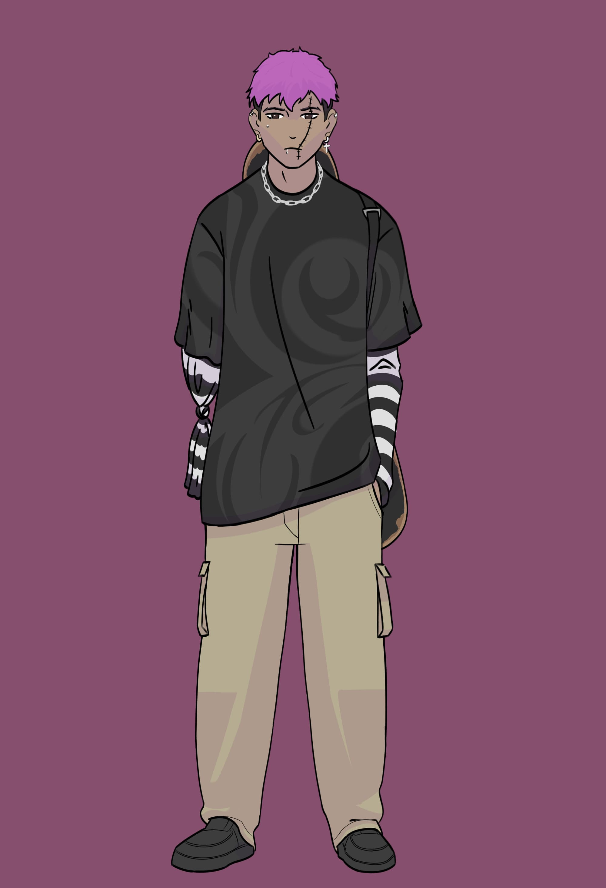

Billy Mandy
Agente - Billy Mandy
Patente - Recruta
Ocupação - Linha de frente
Um agente bem extrovertido, amigável e protetor. Ele e os amigos foram atacados por Anárquicos, apenas ele escapou.
Yue
Agente - Yue
Patente - Recruta
Ocupação - Linha de frente
Um combatente novato sem experiência em missões, um pouco impulsivo e distraído. Foi achado atrás do açougue onde trabalhava, foi atacado por uma Esfera de Energia.
Luan

Agente - Luan
Patente - Operador
Ocupação - Linha de frente
Um ocultista com pouca experiência, mas muito corajoso, acabou perdendo sua equipe em que seu irmão liderava, mas continua firme em enfrentar o paranormal a cada dia.
Yuri
Agente - Yuri
Patente - Recruta
Ocupação - Linha de frente
Um agente extrovertido, bem humorado e sociável. Achou um livro misterioso na sua escola, ele e os amigos acabaram fazendo um ritual do livro e invocaram uma criatura que matou todos seus colegas.
Erik
Agente - Erik
Patente - Operador
Ocupação - Linha de frente
O agente Erik é um ocultista com muita dedicação, habilidade e inteligência, acredita-se que ele possa se tornar incrivelmente forte no futuro, ele sabe explorar muito bem o outro lado.
Alphen
Agente - Alphen
Patente - Recruta
Ocupação - Linha de frente
Um especialista sem experiência em missões. Uma pessoa bem quieta, e introvertida. Achou um livro que despertou um pesadelo com uma criatura paranormal, ele enterrou o livro, mas não foi encontrado no local indicado.
Daniel
Agente - Daniel
Civil
(Sem cargo)
Um civil envolvido com o paranormal, mas parece determinado a enfrentar ele, achado na missão do Vilarejo Alvorada sendo mantido refém por ocultistas. Aprendeu o básico de ocultismo e combate com a equipe, tem o potencial para se tornar um ocultista formidável.
???
Proxima temporada